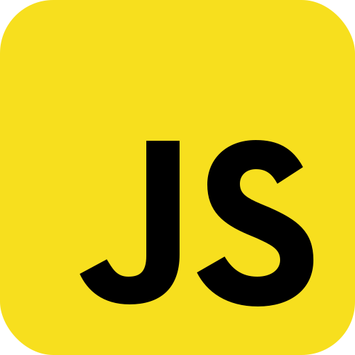
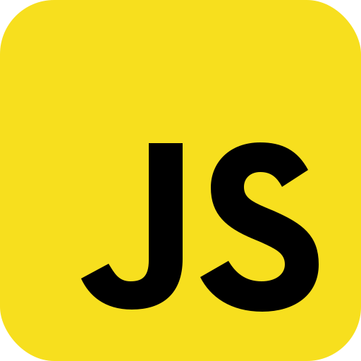
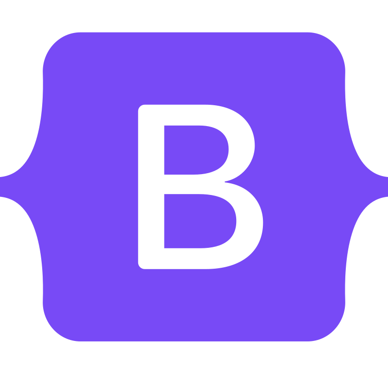
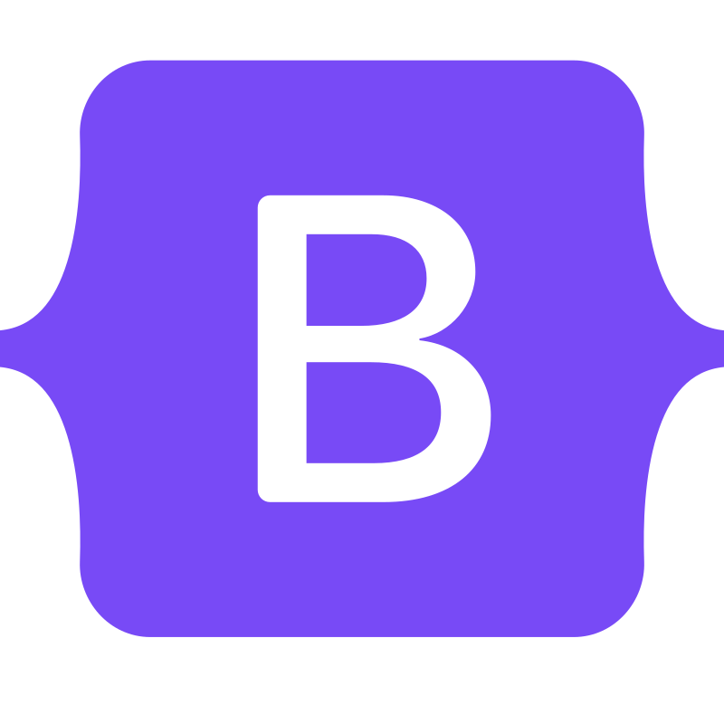
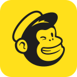
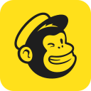

ABOUT

Konnichiwa!
Hi I’m Chiaki, a self-taught web developer with a passion for creating intuitive and functional websites.
My coding journey began when I was in my previous role as a communications coordinator. I had the opportunity to work with a front-end developer to build and design a new website from the ground up tailored to the needs of the organization.Creating layout and contents and seeing it take shape was very exciting, and it left me with a burning desire to learn more about UI design and development.
Since then, I started taking courses to gain the skills necessary to create a website on my own and have been studying at every chance I got. Recently, I completed a formal degree in front-end web development.
I believe my previouse role in creating social media, newsletters, and website posts also helped me home in on my eye for design and creative abilities.
I’m excited to continue learning and growing as a front-end developer and look forward to contributing to exciting projects in the future!
SKILLS
- Proficient with HTML, CSS, JavaScript, React, Bootstrap
- Developing custom WordPress themes and managing websites
- Building custom WordPress themes integrated with WooCommerce
- Creating responsive designs and mobile-first websites
- Designing mockups and wireframes using Figma
- Experience with editing images using Photoshop
- Experience with creating and managing social media posts
- Experience with creating and contributing monthly newsletters using MailChimp
- Building applications using API data

 



 


 

EXPERIENCE
Communications Coordinator
Vancouver Japanese Language School and Japanese Hall, Vancouver, Canada
2022 Jun- 2023 Mar
Led a new website launch project for a 110+ year old organization that provides day care, Japanese programs from children to adults and community events. After the new website went live, I was fully responsible for updating and maintaining the site using WordPress. I was also responsible for designing and creating social media posts, monthly e-newsletters, as well as creating posters for internal and external distribution to expand the organization's programs and activities.
Translator/Administrator
Vancouver Japanese Language School and Japanese Hall, Vancouver, Canada
2021 Apr- 2022 May
In charge of translating internal and external letters, website contents, articles for e-newsletter and social media from English to Japanese and vice versa, as well as administrative tasks such as managing registrations closely working with manager and accountant.
Public Servant -Public School Administration
Yamatsuri Junior High School, Fukushima, Japan
2009 Apr - 2013 Mar
Tominari Elementary School, Fukushima, Japan
2013 Apr - 2018 Mar
In charge of a wide range of duties for public schools with around 30 teachers and 200 students. Fully responsible for financial accounting and budget management and acting as the first point of contact for the school board, students’ guardians as well as visitors.
INTERESTS
- Hiking -Panorama Ridge in Garibaldi Park is undoubtedly my favorite trail!
- Biking -I love exploring the islands around Vancouver!
- Camping -I am a campfire master, at least according to my friends.
- Film Photography -I've recently delved into this hobby! Click here to view my photos.